creating meaningful language technology without machine learning
Swarthmore College
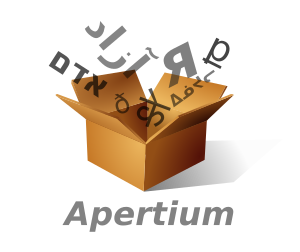
Yukwe ènta kishkwik Lënapehòkink kpëmëtunhalelhumo. Kenahkituneyo Lënapeyòk yu hàki òk Lënapei Sipu lòmëwe nòchi, yukwe, òk apchich. Wëlilìsitàm tìlìch këmaxinkwelëmanëneyo Lënapeyunkahke, òk Lënapeyòk ahpihtit yukwe òk alàpa.
(I am speaking to you today from Lenapehoking, land of the Lenape. We recognise the Lenape as past, present, and future stewards of this land and the Delaware River. Let us honor through our actions the Lenape who were, those who are, and those who will be.)
Overview
My talk in a nutshell
Will overview how to develop meaningful language technology by developing symbolic tools.
The next ~42 minutes:
- Meaningful language technology
- Symbolic language technology (LT)
- Getting started
- Concluding thoughts
What NLP do we work on?
Common NLP tasks
- Tokenisation
- POS Tagging
- Sentiment analysis
- Stance detection
- Inference / textual entailment
- Semantic role labelling
- Named entity recognition
- Speech recognition
- ...
How we experience them
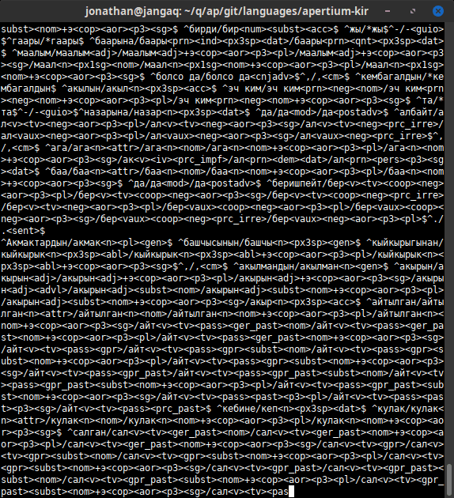
How real people experience NLP
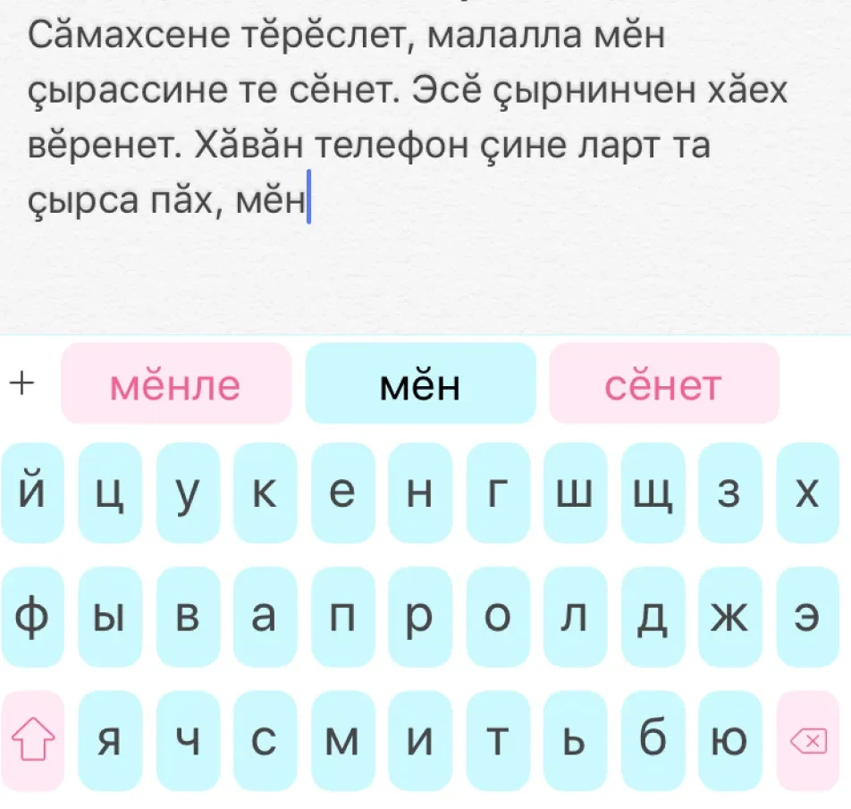
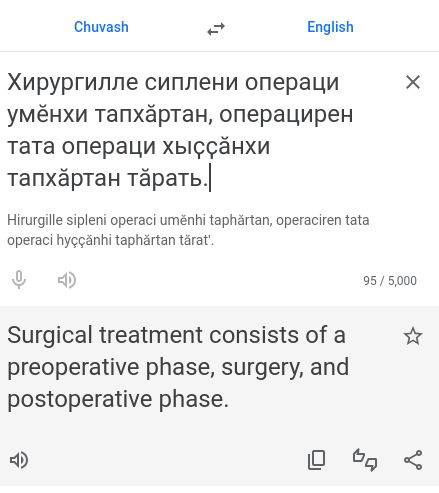
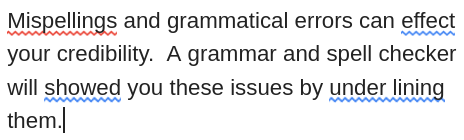
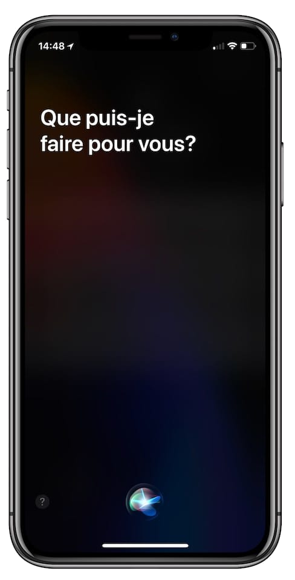
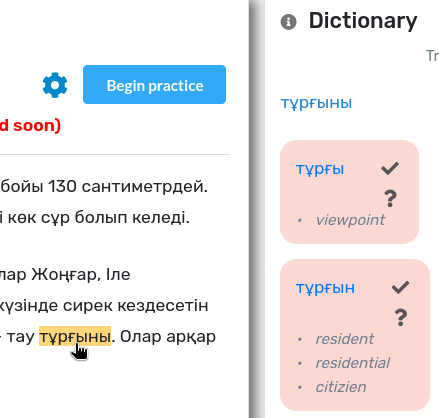

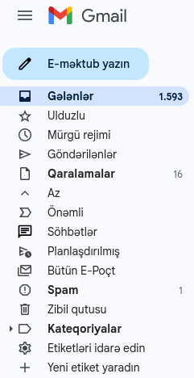
Key:
- Input methods
predictive text - Machine translation
- Screen readers (TTS)
- Spell checking
grammar checking - Voice assistants
- Computer-aided language learning
- Search engines
- Interfaces (localisation)
Why language technology matters
Why is language technology important to language vitality?
- Digital technology is hugely pervasive
- Language mediates most interaction with digital technology
What does language technology do for a language?
- adds to ease with which a language can be used in digital contexts
- increases range of uses of language
- raises perceptions of language
- supports maintenance and revitalisation efforts
What happens without language technology?
"Digital language death" (i.e., loss of intergenerational transmission)
Language technology supports language vitality
Reframing NLP
Q: Does this support language vitality?
A: not directly
Meaningful language technology
- Community-oriented terminology
- NLP → Language technology (LT)
- "low-resource" → meaningful in low-vitality situations
- Evaluation
- should include (potential) usefulness
- corporate NLP has this part this right
- Motivation: how can LT
- empower communities
- promote linguistic vitality
What's meaningful
in low-vitality situations?
What's meaningful in low-vitality situations?
not all low-vitality situations are the same (Liu et al. 2022)
| Speakers | Outside interest | Language Technology | Resource availability | Local expertise in Lg & NLP | Community priorities | ||
|---|---|---|---|---|---|---|---|
| Language A (350) | "small" national language | ≥1M, <10M | some big corporations | some seamless tools; increasing localisation | large corpora | plenty |
|
| Language B (1K) | "large" regional language | ≥100K, <1M | occasional corporate | some tools; spotty localisation | copora (spotty) | some |
|
| Language C (3.8K) | "small" regional language | ≥1K, <100K, increasingly few young | some academic | a couple local web-based tools | some published literature | some "activists", mostly self-taught |
|
| Language D (764) | extremely "endangered" language | <100 fluent L1, mostly elders | some academic | none | some published texts, mostly collected narratives | adult learners (small community) |
|
Symbolic methods
Symbolic tools
- No (or minimal) machine learning (ML)
- Requires no large corpora
- Can be done low-budget, with no special equipment
- (Essentially) single development cycle (Butt 2020)
- Highly precise (Butt 2020)
- Leverage linguistic knowledge
- Good for partnerships/collaborations with communities
- Outcomes
- Practical?
- Meaningful?
Morphological transducers
Example:eng
| Input / Output: | isn't |
|---|---|
| ↕ | |
| Output / Input: |
be |
Example:kaz
| Input / Output: | Алмасы |
|---|---|
| ↕ | |
| Output / Input: |
алма алмас Алма Алмас ал ал ал ал |
Morphological transducers
“Downstream tasks” (uses):
- Spell checkers
- Component of machine translation (MT) systems
- Computer-assisted language-learning (CALL)
- Script conversion
- Other NLP tasks and research
- Whatever else you can imagine
Morphological transducers
Development
- Advantages:
- No requirement for giant corpora or powerful computers
- More precise than corpus-based tools (Butt 2020)
- Easy to fix errors and expand coverage
- (In MT) lots of "free rides" for related languages
- Support for multiple orthographies mostly trivial (Washington et al. 2020, Washington et al. 2021)
- (Essentially) single development cycle (Tyers et al. 2015, Butt 2020)
- Only need knowledge of language, not mathematics and programming
- Disadvantages:
- ...Need knowledge of language, not mathematics and programming
- Takes time to develop (human time, not compute)
- i.e., good for community partnerships:
- Collaboration between different types of experts, as equals
- Less prone to extractive & other marginalising approaches
Case study: Turkic morphological transducers
Turkic transducers I've contributed to
by naïve coverage & lexicon size + distribution
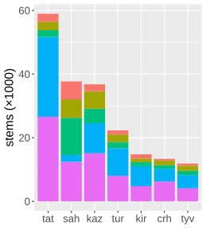
Production-level92%-98% coverage
(
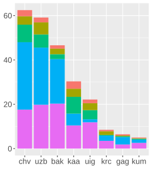
Working88-93% coverage
(Chuvash,
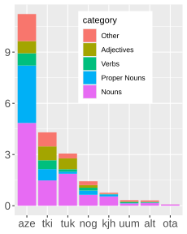
Prototype<80% coverage
(Azerbaycani, Iraqi Türkman,
Case study: Turkic morphological transducers
Transducers I've contributed to: downstream tasks
Kazakh
- Used in other NLP research in Kazakhstan
- Used as segmenter in a shared task
- Spell checker for Word & LibreOffice
- Verb paradigm generator
Tatar
- Used to annotate Tatar National Corpus
- Spell checker for Word & LibreOffice
Uyghur
- Used in corpus-based phonology research
Tuvan
- Used for UniMorph shared task (2021)
- Spell checker for Word & LibreOffice
Sakha
- Used in Revita (CALL)
- Used for UniMorph shared task (2021)
Kyrgyz
- Spell checker for Word & LibreOffice
- Used for annotating published corpora
Morphological transducers
Downstream tasks with potential uses by communities
- Spell checkers
- Solutions for integration with some environments (Word, LibreOffice)
- Hard to add at OS level (Windows, macOS, iOS, Android, ChromeOS)
- Nigh impossible to integrate seamlessly in cloud platforms (Google Docs, MS Office 365)
- Computer-aided language learning (CALL)
- Paradigm generators (Apertium Paradigmatrix)
- Morphological dictionaries (Morphodict, Apertium Dictionary Mode)
- Text-reading support (Revita, Geriaoueg)
- Machine Translation (Apertium, Giellatekno)
- For saving limited translator/editor time when generating content speakers interact with
- Available as stand-alone websites and local services
- Possible to integrate into some word processors, browsers
Morphological transducers
Downstream tasks with potential uses by communities
CALL: Apertium (HTML-Tools) Dictionary Mode
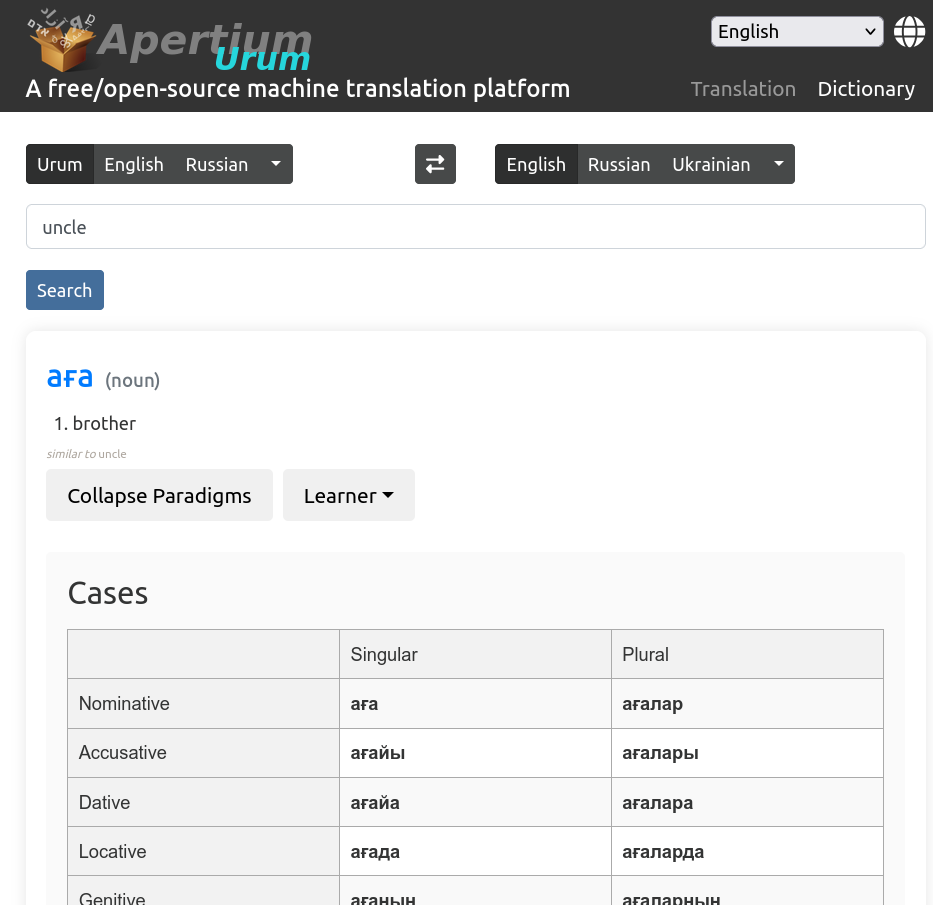
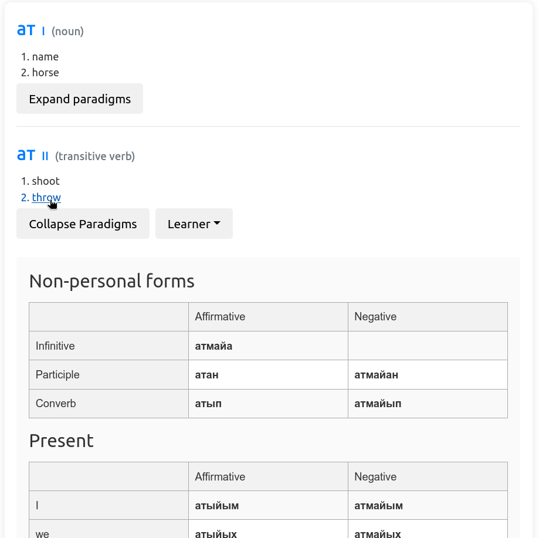
Morphological transducers
Downstream tasks with potential uses by communities
MT: Apertium
Case study: Turkic morphological transducers
Turkic transducers I've contributed to
by naïve coverage & lexicon size + distribution
92%-98% coverage
(
88-93% coverage
(Chuvash,
<80% coverage
(Azerbaycani, Iraqi Türkman,
Case study: Turkic morphological transducers
Transducers I've contributed to: downstream tasks
Kazakh
- Used in other NLP research in Kazakhstan
- Used as segmenter in a shared task
- Spell checker for Word & LibreOffice
- Verb paradigm generator
Tatar
- Used to annotate Tatar National Corpus
- Spell checker for Word & LibreOffice
Uyghur
- Used in corpus-based phonology research
Tuvan
- Used for UniMorph shared task (2021)
- Spell checker for Word & LibreOffice
Sakha
- Used in Revita (CALL)
- Used for UniMorph shared task (2021)
Kyrgyz
- Spell checker for Word & LibreOffice
- Used for annotating published corpora
Developing a morphological transducer
lexd + twol + spellrelax method
- lexd: specifies morphotactics and lexicon
- twol: handles morphophonology
- spellrelax: handles (~consistent) spelling variations
Apertium framework
- bootstraps a vanilla template
- includes compilation scripts
- uses widely supported HFST binaries
- lots of infrastructure built on it
Getting started
Concluding thoughts
- Symbolic tools
- are robust tools and shouldn't be ignored because of ML hype
- (are one way to) enable meaningful langauge technology
- YOU can develop symbolic tools
വളരെ നന്ദി!
Thank you!
slides available at
https://jonorthwash.github.io/2025-LangTech-SPELLL/presentation.html
Case study: Turkic morphological transducers
Free/Open Source (versus proprietary)
Free/Open Source
Free = as in speech (and beer)Open = made available (and insides showing)
What this means (ideally / in the case of Apertium):
- Available for anyone to use, modify, or build on
- Robust community, support from developers
- Able to easily compare to other systems
- Abandoned projects can be resumed or repurposed
- Standards / tools for wider integration/use (e.g., Apertium: website platform, integration into OmegaT & Wikipedia Content Translation tool)
→ i.e., maximally accessible to language communities
Turkic: Language vitality
Turkic languages by number of speakers
>200 million speakers total
Language vitality: Turkic
Turkic languages by vitality
~40 languages, only 11 "normal" (Ethnologue 2023, other sources)
(estimates probably overly optimistic)
The full list
| language | № | vitality |
|---|---|---|
| Turkish | 88M | normal |
| Uzbek | 33M | normal |
| Azərbaycani | 24M | normal |
| Kazakh | 17M | normal |
| Uyghur | 12M | normal |
| Turkmen | 11M | normal |
| Kyrgyz | 7.3M | normal |
| Tatar | 5.5M | normal |
| Iraqi Türkman | 4.5M | normal* |
| Bashqort | 2M | vulnerable |
| Chuvash | 1.1M | vulnerable |
| Qashqayi | 1M | normal |
| Khorasani | 650K | vulnerable |
| Qaraqalpaq | 650K | normal |
| Crimean Tatar | 600K | severely endangered |
| Sakha | 500K | vulnerable |
| Qumuq | 450K | vulnerable |
| Qarachay‑Balqar | 350K | vulnerable |
| Tuvan | 300K | vulnerable |
| Urum | 200K | definitely endangered |
| language | № | vitality |
|---|---|---|
| Gagauz | 150K | critically endangered |
| Siberian Tatar | 100K | definitely endangered |
| Noghay | 100K | definitely endangered |
| Dobrujan Tatar | 70K | severely endangered |
| Salar | 70K | vulnerable |
| Southern Altay | 60K | severely endangered |
| Northern Altay | critically endangered | |
| Khakas | 50K | definitely endangered |
| Khalaj | 20K | vulnerable |
| Äynu | 6K | critically endangered |
| Western Yugur | 5K | severely endangered |
| Shor | 3K | severely endangered |
| Dolgan | 1K | definitely endangered |
| Dukhan | <500 | critically endangered |
| Krymchak | 200 | critically endangered |
| Ili Turki | 100 | severely endangered |
| Tofa | 100 | critically endangered |
| Karaim | <80 | critically endangered |
| Chulym | <50 | critically endangered |
| Fu‑yü Gyrgys | <10 | critically endangered |
| total | 211M |
(Ethnologue 2023 and other sources)
Existing Turkic Language technology
Mobile keyboards
Machine translation
Text-to-speech support
Baseline localisation data
Existing Turkic Language technology
ISO 639 language codes
(baseline for any hope of language technology)
Currently missing: Iraqi Türkman, Fu-yü Gyrgys, Dukhan
- Most of those are corporate efforts
- What about non-corporate efforts?
-
- academic
- community-based
- quite a few cross-over
Open/community-based efforts to develop Turkic language technology
TurkicInterLingua (TIL)
- Machine Translation
- Other NLP tasks
Apertium
- Machine Translation
- Morphological transducers
(case study, viz. next slides)
Universal Dependencies
Kazakh, Kyrgyz, Tatar, Turkish (×4), Uyghur
Common Voice
Uyghur (513h), Bashqort (279h), Uzbek (266h), Turkish (135h), Kyrgyz (49h), Tatar (34h), Chuvash (29h), Sakha (24h), Turkmen (7.8h), Kazakh (3.8h), Azərbaycani (1.5h)
not ready: Qaraqalpaq (28%), Tuvan (20%)
Tesseract
Azərbaycani (×2), Kazakh, Kyrgyz, Tatar, Turkish, Uyghur, Uzbek (×2)
Practicality of community priorities
| can be developed privileging local agency | releasable as/in stand-alone product / sufficient? | can be developed without large corpus | integrable into popular platforms | popular tools can be updated/corrected | ||
|---|---|---|---|---|---|---|
| search engine support | ✔ | ✘ / – | ✘ | ✘ | ✘ | |
| voice assistants | ✔ | ✔ / ✘ | ✘ | ✘ | ✘ | |
| localisation | ✔ | ✔ / ✘ | ✔ | ✘ | ✘ | |
| spelling/grammar checking | ✔ | ✔ / ✘ | ✔ | ✔/✘ | ✘ | |
| simple keyboards | ✔ | ✔ / ~✔ | ✔ | ✔/✘ | ✘ | |
| predictive text keyboards | ✔ | ✔ / ~✔ | ~✔ | ✘ | ✘ | |
| screen readers | ✔ | ✔ / ✔ | ✔ | ✘ | ✘ | |
| MT | ✔ | ✔ / ✔ | ✔ | ✘ | ✘ | |
| CALL | ✔ | ✔ / ✔ | ✔ | ✘ | ✘ |
Practicality of community priorities
Privileging local agency
- Everything for marginalised languages can be developed privileging local agency
- Almost nothing actually is
Integration
- Many tools are not sufficient as stand-alone products
- It's almost impossible to integrate most tools into popular platforms
- It's entirely impossible to update/correct popular tools
Privileging local agency
The specific challenges
- Localisation: much software is not localisable independently of the producer of the software
- Closed interfaces: language-related programming interfaces are often closed to developers
- Closed resources: language resources are closed and not accessible to the public
- Disregarded standards: language-related international standards are not respected or fully implemented
Stepping back
Shuts out communities and those supporting them
… also just bad design (but intentionally so!)
Why???
Corporate profit models often demand this
Privileging local agency
What can be done?
- Demand from your corporations (per Moshagen & Trosterud 2019)
- Open localisation
- Open interfaces
- Open resources
- Accessible standards
- Support community priorities, privilege local agency
(and ask your corporations to as well)Caveat: engagement with a community can take forms that do not privilege local agency (Long 2007, Romero 2016) - Focus on technology that can be meaningful without full integration
- Close the loop: make the results of your work available to communities
Why?
- Bring value to marginalised communities
- Help prevent "digital language death"
- Be an ethical language technologist